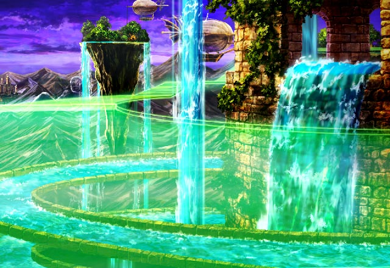

ミーファ
グリフさん、ロアさん、クランツさん…… 俺は…俺は遂にオーンを倒しました！
ミーファ
Shou-chanよ。 お前の協力に感謝する。
ミーファ
手負いとはいえ、オーンをここまで 追い込めたのはお前の力があったからだ。
ミーファ
先輩たちのことを忘れること無く 胸の奥にしまってな……。
ミーファ
Shou-chan、そしてその仲間の 召喚師たちよ。
ミーファ
お前たちの協力に感謝して 俺が知っている情報を教えてやる。
ミーファ
イシュグリア先遣隊が命がけで 調査した情報、
ミーファ
カルナ・マスタが封じられた地の 情報をな。
ミーファ
俺たちはこのイシュグリアで魔神たちに 追われる中、その任務を遂行していた。
ミーファ
そして、それらしき地を発見しながらも それを持ち帰ることができなかった。
ミーファ
Shou-chanよ。 お前は進むのだろう？
ミーファ
それが召喚老たちの意志と知りながら アクラスの遺志を継ぐのだろう？
ミーファ
お前たちが目指すべき場所の名はメノン。 そこにカルナ・マスタは眠っている。
ミーファ
世界を滅ぼす力を取り戻すため 傷を癒やしながらな……。
セリア
メノン……。 それが私たちが目指す場所……。
ミーファ
だが、その前にお前たちは２つの場所を 進まねばならない。
ミーファ
１つは竜の力を持つ魔神が支配する地 ファル・ナーガ。
ミーファ
１つはかつて多くの魔神を従えた国家が 存在した地、エストリア。
ミーファ
その２つを越えた時、 お前たちはメノンに進む資格を得るだろう。
ミーファ
残念だが俺が知るのはここまでだ。 その先はお前たち自身の力で調べるがいい。
セリア
Shou-chanと一緒に戦ったのも 何かの縁だしさ。
セリア
もう、召喚老様たちとの わだかまりもないんでしょう？
ミーファ
今さら召喚院の者とともに戦うのには どうにも抵抗がある。
ミーファ
それに、グラデンスへの 嫌悪感はまだ消えてはいない。
ミーファ
貴様のつまらぬ策など無くても 俺はお前らに負けはしないとな。
ミーファ
……そうだな。 俺自身の言葉で伝えるとしよう。
ミーファ
Shou-chan、お前とはまたすぐに 会うような気がする。
ミーファ
俺も本気のお前と 戦ってみたくなったのでな。
パリス
ええ、でもこれで最終目的地は はっきりとしたわね。
セリア
まあでもそこに辿り着くまで まだ色々大変そうだけどね。
パリス
カルにルジーナにベルツ、 それにまだ出会っていない魔神。
セリア
体力が回復しても 襲いかかったりしないんなんて。
オーン
フン……。 それよりも、とっとと先へ進め。
オーン
お前たちが言ったように やるべきことは山積みなのだろう。
オーン
それと、Shou-chanよ。 調子に乗るんじゃないぞ。
オーン
次に戦った時も同じように 勝てると思わないことだな。
セリア
それじゃあパリス、Shou-chan、 行きましょう。
セリア
敗北感に打ちひしがれている オーン様をそっとしておくのも優しさよ。
セリア
Shou-chanも しっかり言っておきなさい。
パリス
Shou-chanも急ぎましょう！ オーン様の気が変わらないうちに！
オーン
フン、どうせなんとかミーファを 俺に勝たせたかったのだろうが
オーン
貴様が仕掛けた罠など どれもこれも効きはしないわ。
オーン
純粋に奴らが強くなっていた。 ただそれだけだ。
グラデンス
フォッフォッフォッ、 相変わらず不器用な男じゃのー。
グラデンス
その言葉を先ほどかけてやれば また違っていただろうに。
オーン
なぜ自分の敗北を相手の前で 認めねばならんのだ。
オーン
お前はShou-chanたちに すべてを話したんだな。
オーン
あいつらがメノンを目指すのも自由。 俺たちの前に立ち塞がるのも自由。
オーン
あいつらのこと、 それにお前の息子のことも。
グラデンス
そうじゃな。 ワシは信じているんじゃろうな……。
オーン
ならば俺たちも進むとするか。 こんな所でいつまでも休んでられん。
グラデンス
お主、本当にShou-chanたちに 負けたんじゃよな？
グラデンス
フォッフォッフォッ、 そうだな、お主はそういう男じゃったな。
グラデンス
アクラスの遺志を継ぐ者として カルナ・マスタを倒す戦いにの。
ルジーナ
時代が変わっても お前はやっぱり人間の敵になるってわけか。
ルジーナ
何を黙っているんだ？ それとも何も言い返せないのか？
ルジーナ
ハハハハハッ、俺の予想は大的中って ヤツだったみたいだな！
ルジーナ
さーて、それじゃあ俺は どう動かせてもらうとするかな。
ルジーナ
俺がお前らに面白いものを 見せてやるからよー。